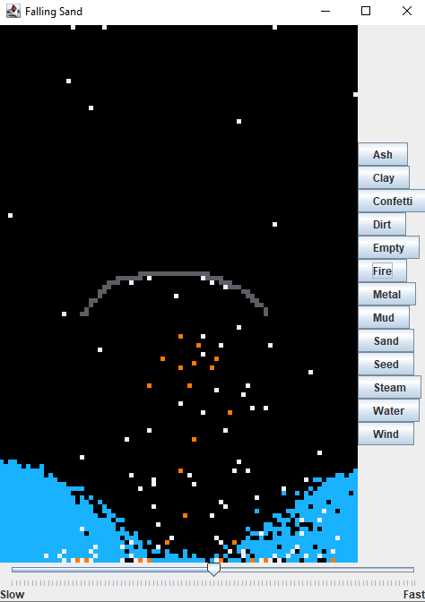
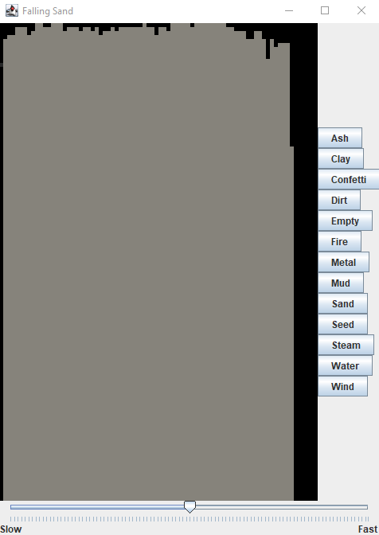
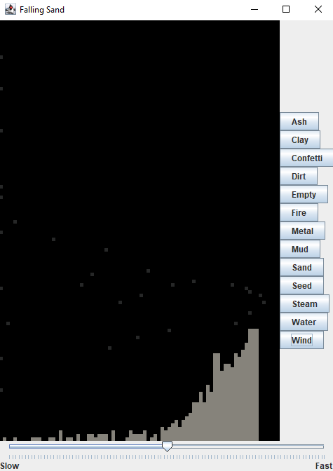
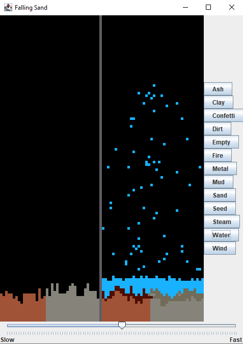
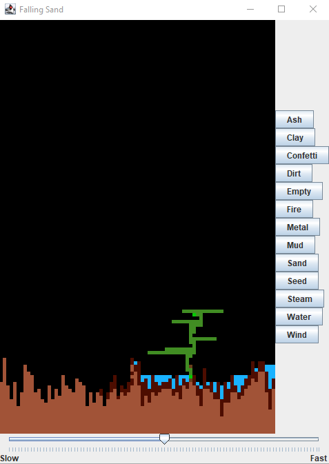

This was a recurring project in the Java II course; with each stage, we re-organized the structure.
The first stage was just using a two-dimensional array.
The second stage used modular programming with constants and relationships to make it easier to add particles and effects.
The third stage, which I have here, used object-oriented programming.
Not only could we have different particles, we could decide how they would react when making contact with particles of the same or different type.
For example, water slides off curves, and metal won't fall:
Confetti came in two colors; if it was blue, it sprayed upwards, while if it was yellow, it sprayed downwards.
In addition, when blue confetti hit the top of the frame, it turned yellow and fell down.
The confetti would vanish if it hit another confetti particle.
If fire came into contact with water, the water would turn to steam and rise toward the top of the frame:
A large pile of ash after something burns is no big deal; you can simply use wind to blow it away at astonishing speeds.
 If water makes contact with dirt or ash, the result is mud and clay, respectively:
In order to grow something, you must plant a seed in mud, which may require you to first water the dirt:
